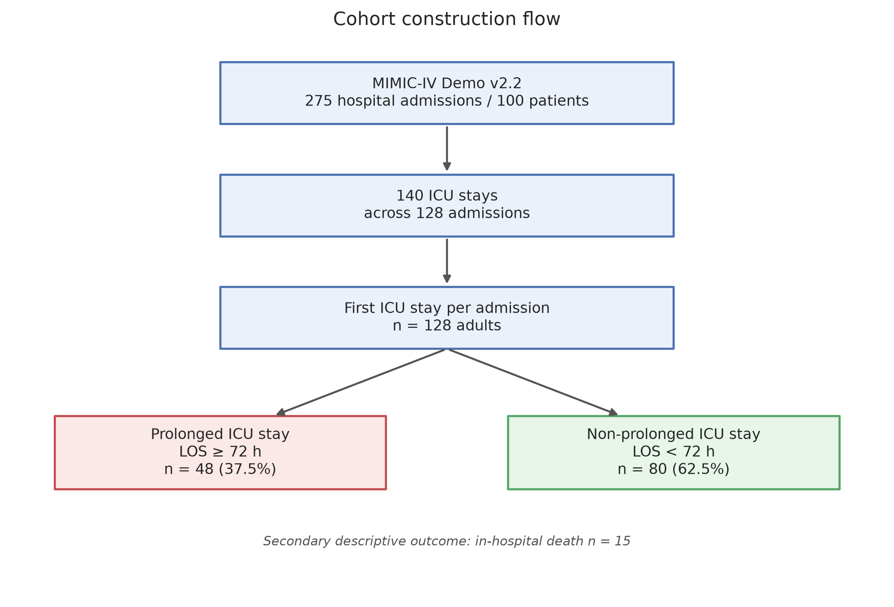
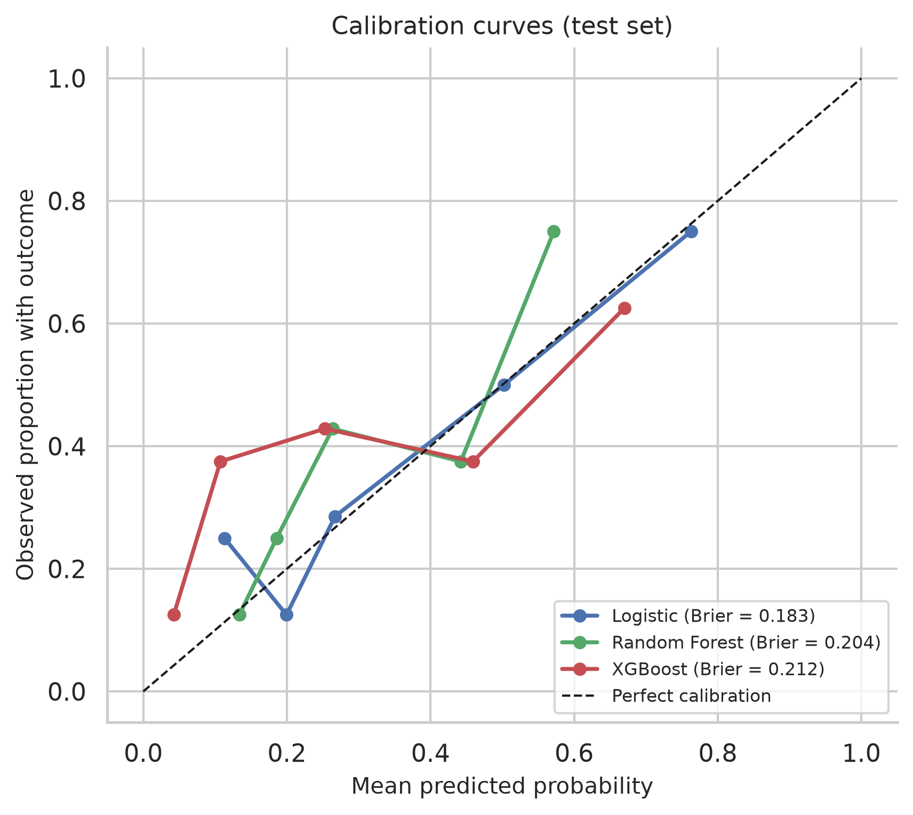
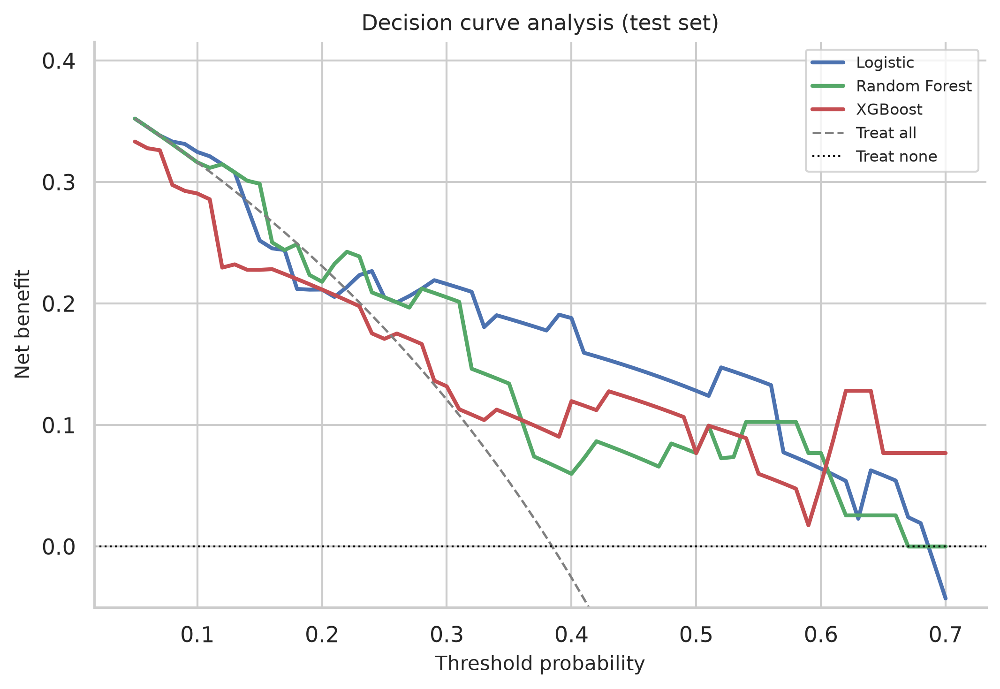
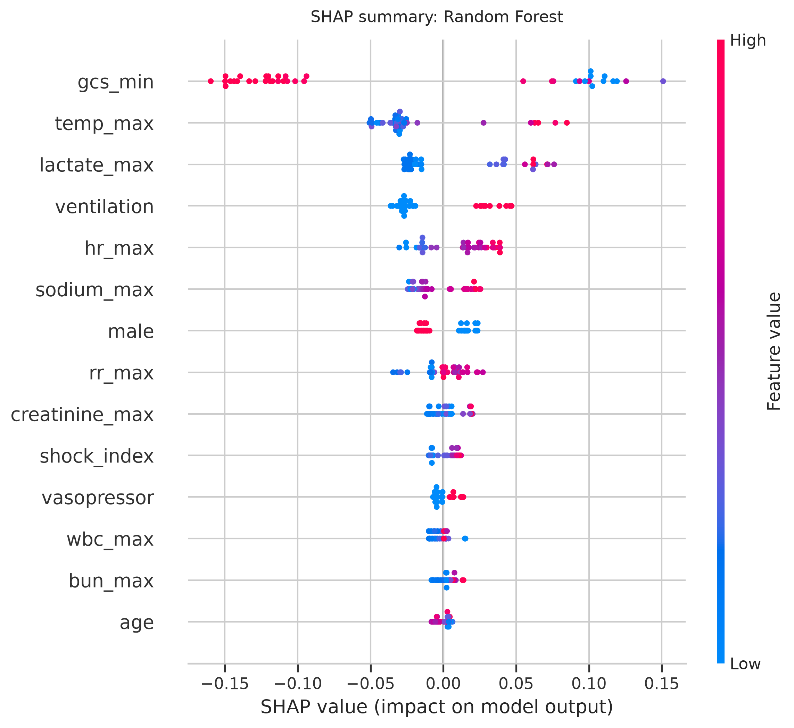
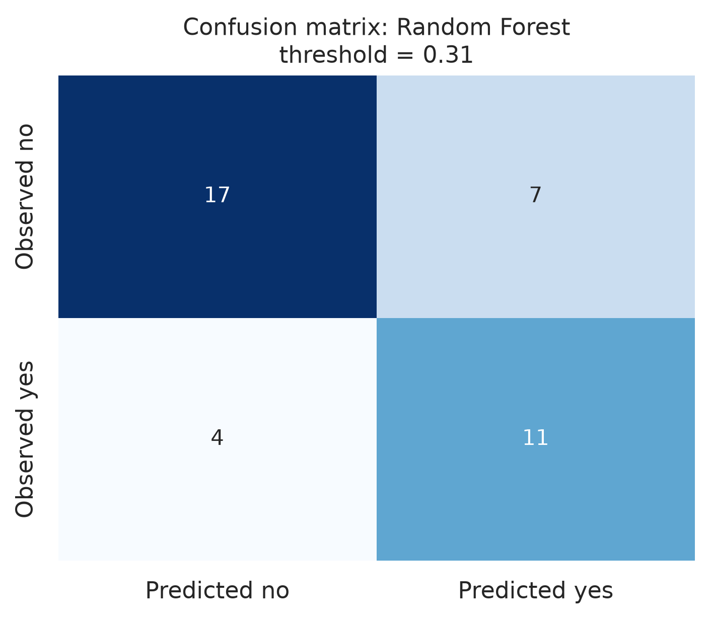

项目 / 临床预测建模
早期预测延长 ICU 停留
利用入 ICU 后 24 小时内的常规临床数据，预测患者是否会发生延长 ICU 停留（LOS ≥ 72 小时）。项目覆盖数据读取、预处理、统计分析、预测建模、模型评估与可视化，并使用 Jupyter Notebook 与 LaTeX 完成可复现交付。
128成人首次 ICU 住院
48延长停留（37.5%）
0.778随机森林交叉验证 AUROC
0.739测试集 AUROC（95% CI 0.559–0.883）
研究问题
ICU 床位与人力有限。若能在入科早期识别可能长时间占用 ICU 资源的患者，临床团队可以更早调整监护强度、安排床位与制定出院计划。延长 ICU 停留受疾病严重度、治疗反应、并发症和出院流程共同影响，因此需要一个多变量模型，而不是单一指标。
本项目的结局定义为 ICU 住院时长 ≥ 72 小时；院内死亡作为次要描述结局。分析单位是每个住院的首次 ICU stay，以避免同一住院多次转入导致的非独立观察。
重要说明：
MIMIC-IV Demo 仅包含 100 名患者，样本量小、事件数有限。本项目用于展示可复现的临床预测建模流程，结果不应直接作为临床结论。
数据与队列
数据来自 PhysioNet 公开的 MIMIC-IV Clinical Database Demo v2.2（DOI: 10.13026/dp1f-ex47）。数据库包含 275 次住院、140 个 ICU stay，对应 128 次不同住院。保留每次住院的首次 ICU stay 后，共 128 例成人患者进入分析。

预测变量
所有变量均来自入 ICU 后 24 小时内的常规记录：年龄、性别、是否急诊入院；心率最大值、收缩压最小值、平均动脉压最小值、呼吸频率最大值、体温最大值、GCS 最小值；肌酐、尿素氮、乳酸、白细胞、血钠的最大值；24 小时内是否机械通气或使用血管活性药；以及衍生变量休克指数（心率/收缩压）。
分析流程
项目按照六个环节组织，全部在 Jupyter Notebook 中完成；计算在远程服务器上执行，图表与表格自动导出供报告和网页使用。
- 数据读取读取 patients、admissions、icustays、chartevents、labevents 等表。
- 数据预处理构建队列、提取 24 小时特征、处理缺失与异常值。
- 统计分析Table 1、Mann–Whitney / 卡方检验、SMD、单因素 OR、相关性。
- 预测建模70/30 分层划分，5 折交叉验证，logistic / RF / XGBoost。
- 评估与可视化AUROC、PR-AUC、Brier、校准、DCA、混淆矩阵、SHAP。
建模细节：中位数插补与标准化均在训练集内拟合，避免信息泄漏；以交叉验证 AUROC 选择模型，而不是测试集表现；测试集仅用于最终评估。所有模型使用固定随机种子 42。
结果
随机森林在交叉验证中 AUROC 最高（0.778），被预先选定为主模型；其在独立测试集上的 AUROC 为 0.739（95% CI 0.559–0.883），PR-AUC 为 0.698，Brier score 为 0.204。在 Youden 阈值 0.315 下，敏感度为 73.3%、特异度为 70.8%。Logistic 回归的测试 AUROC 为 0.750，Brier score 为 0.183，校准更好。





解读与局限
模型的主要信号来自三个方面：神经功能（GCS）、灌注与代谢状态（乳酸、休克指数、平均动脉压）以及呼吸支持（机械通气、呼吸频率、体温）。这些变量在入 ICU 早期即可获得，不需要额外特殊检查，因此具有一定的可推广性。
但必须强调局限：Demo 数据仅 128 个首次 ICU 住院、48 个事件，测试集 39 例，AUROC 置信区间较宽；数据来自单中心、回顾性队列，缺乏外部验证；ICU LOS 还受出院流程与床位资源影响；乳酸缺失率约 39%，中位数插补可能引入偏倚。因此，本项目应被视为方法学演示，而非临床结论。
复现与下载
报告提供完整的方法、结果、图表与参考文献；Notebook 包含全部可执行代码与输出；数据可从 PhysioNet 公开获取。
参考
- Johnson AEW, Bulgarelli L, Shen L, et al. MIMIC-IV, a freely accessible electronic health record dataset. Scientific Data. 2023;10:1.
- Johnson A, Bulgarelli L, Pollard T, Horng S, Celi LA, Mark R. MIMIC-IV Clinical Database Demo (version 2.2). PhysioNet. 2023. DOI: 10.13026/dp1f-ex47.
- Collins GS, Moons KGM, Dhiman P, et al. TRIPOD+AI statement. BMJ. 2024;385:e078378.
- Lundberg SM, Lee SI. A unified approach to interpreting model predictions. NeurIPS. 2017.